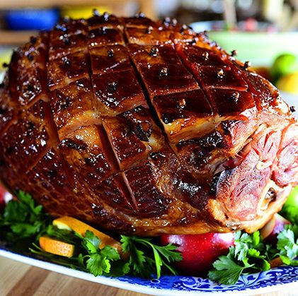

This brown sugar & mustard ham combines some delightful flavors.

This thick ham will get your socks off.
This ham recipe combines some sour/bitter and sweet flavors.
It utilizes the tangy flavor of mustard and the staple brown sugar
that is ever so common in any ham recipe. Wow your guests with a ham
that is a bit unconventional to your standard Thanksgiving hams.
Ingredients
- 8-10 pound (4-5 kg) bone-in fully cooked ham
- 1/2 cup water
- 1/2 cup unsalted butter, reduce fat or full fat
- 1 cup brown sugar
- 1/2 cup honey
- 2 tablespoons Dijon mustard
- 1/4 teaspoon ground cinnamon
- 1/4 teaspoon ground cloves
- 4 cloves garlic, smashed
Step by step instructions
- Preheat the oven to 300°F | 150°C and arrange a rack in the lower third. Remove any plastic packaging or netting from the ham. Trim away the rind and discard. Set the ham aside to rest at room temperature for 1-2 hours.
- Line a baking tray or dish with several sheets of aluminium foil or parchment paper if you prefer (it will make cleanup a lot easier).
- Remove the rind or skin of the ham (refer to steps in post), ensuring you leave the fat on. Using a sharp knife score a 1-inch-wide diamond pattern (don't cut more than 1/4 inch deep) over the entire ham. Place the ham in the baking tray; pour 1/3 cup of water into the base of the pan and cover the ham with two pieces of foil or parchment paper and bake for 30 minutes.
- Meanwhile, heat the butter in a small pot or saucepan over medium heat until golden browned. Add in the brown sugar, honey, mustard, cinnamon and cloves, stirring to mix together well until the brown sugar has completely dissolved, (about 2 minutes).
- Reduce heat to low and add in the garlic. Allow it to become fragrant, cooking for a further minute or two until the glaze just begins to simmer, then set it aside and let cool to lukewarm (the glaze should be the consistency of room-temperature honey).
- After 30 minutes baking time, carefully remove the ham from the oven and increase the oven temperature to 425°F | 220°C. Discard the foil or parchment paper and pour 1/3 of the glaze all over the ham, brushing in between the cuts to evenly cover. Return to the oven and bake uncovered for 15 minutes.
- Remove from the oven, brush with another third of the glaze and some of the pan juices, and repeat again after 15 minutes more minutes of baking until a dark golden-brown crust has formed, (about 30 minutes total). For added depth of flavour, mix some of the ham pan juices together with the glaze in the pot which will help keep it runny enough for brushing. If your crust is still pink after there suggested baking time, turn on your broiler (or oven grill), and allow it to broil for 2-5 minutes, while keeping an eye on it so it doesn't burn from the sugar.
- Let the ham rest 10-20 minutes before slicing.
Success!! Ham cooked. :)
If your glaze has been over simmered and begins to thicken between each baste, add some of the pan juices to it and heat it up over low heat until it warms through and is the consistency of warmed honey.
Enjoy!!
Next Recipe
Back to Mainpage